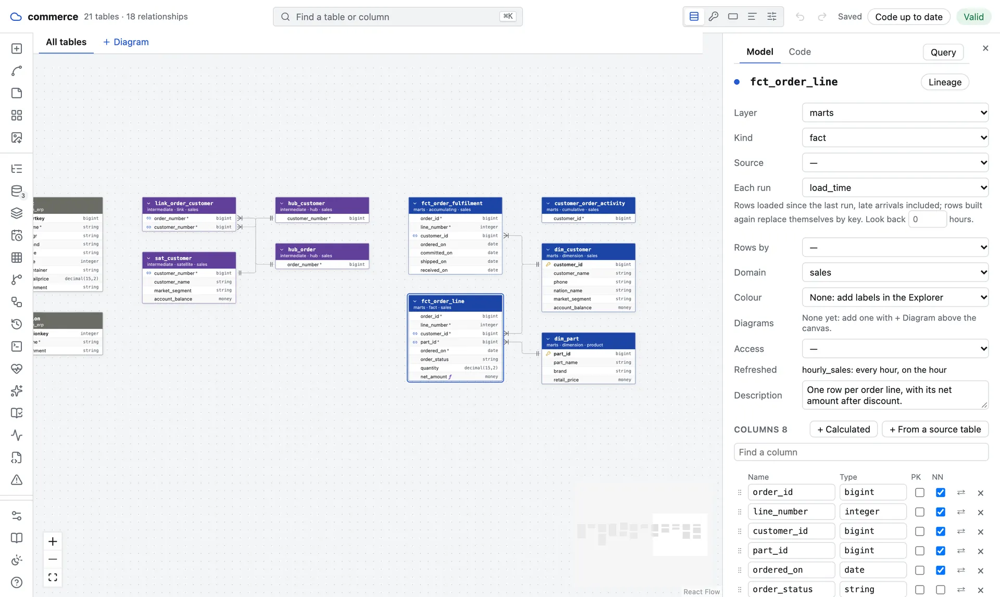
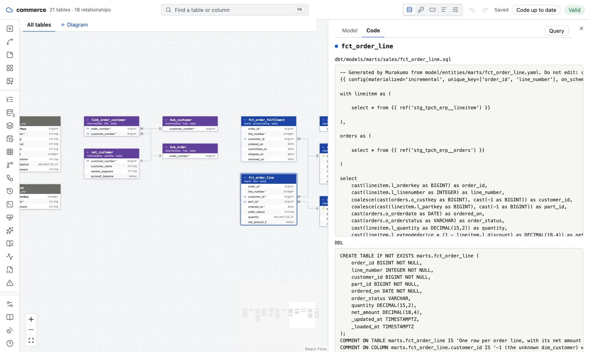

Design the model. Get the whole data platform.
Draw the entities, how they relate and where each column comes from. Choose your warehouse, orchestrator and the rest of the stack. Murakumo writes the DDL, the dbt project, Spark and Polars jobs, tests, data contracts, orchestration, CI and Terraform, as ordinary code in your repository.
$ curl -fsSL https://murakumo.sh | sh $ murakumo init my_platform $ murakumo canvas my_platform # the visual editor
$ pip install "murakumo[canvas,verify,duckdb]" $ murakumo init my_platform $ murakumo canvas my_platform # the visual editor
$ uv tool install "murakumo[canvas,verify,duckdb]" $ murakumo init my_platform $ murakumo canvas my_platform # the visual editor
$ npm install -g murakumo $ murakumo init my_platform $ murakumo canvas my_platform # the visual editor


$ murakumo verify loaded customer: 200 rows (synthetic) loaded lineitem: 200 rows (synthetic) loaded orders: 200 rows (synthetic) loaded part: 200 rows (synthetic) ... loaded yellow_tripdata: 200 rows (synthetic) verified: 25 models and snapshots built, 113/113 tests passed, incremental rebuild passed on duckdb. $ murakumo guide --check Rebuilding from the guide alone, on DuckDB, then with Murakumo, twice over... The guide rebuilds the project: all 36 tables match a Murakumo build, in rows and values, after each of 2 runs of new files; every test passes, and running it again changes nothing.
The commerce example from the repository: TPC-H sources, a Data Vault and star-schema marts. Real screens and real output.
- 1Design the model
- 2Choose the stack
- 3Verify on DuckDB
- 4Deploy to your warehouse
One change, five places to make it
In a hand-built platform the same table lives in the DDL, the staging model, the mart, the tests and the documentation. Every change has to reach all of them, and sooner or later one is missed.
Built by hand
- A renamed column is edited in five files, and one of them is forgotten.
- Tests and contracts are written after the fact, if at all.
- Moving to another warehouse means rewriting the SQL.
- The documentation is out of date the week it is written.
With Murakumo
- Rename it once in the model, and every layer, test and contract follows.
- Tests, quality rules and contracts come from the same model as the code.
- Each warehouse gets its own dialect, and switching is a setting.
- The replication guide is written with the code and checked by
guide --check.
One model, every layer
The model is the single source of truth. Change a column once and every layer, test,
contract and pipeline that uses it changes with it, and murakumo verify
builds it all on DuckDB to prove it works before it reaches your warehouse.
The model
What Murakumo writes
Choose your stack
Every part is a choice in murakumo.yaml or on the canvas. Each warehouse gets
SQL in its own dialect, and switching one is a setting, not a rewrite.
Warehouse
Extract
Load
Transform
Orchestrate
Stream
Quality
Ship
Everything a platform needs, on the canvas
Each feature works from the canvas and from the command line, and the generated code runs without Murakumo.
Data quality you configure
Pick a rule per column or table: not empty, unique, regex, ranges, freshness and more. Each one fails the run, warns, or sets the bad rows aside in a quarantine table.
Quality rules →Data contracts
A contract per table in the Open Data Contract Standard, checked on every load. Import a contract to start a model from one.
Data contracts →A query console for every stage
Read-only SQL on the source, what landed, raw, staging, quarantine and marts, and on Parquet, CSV, Iceberg or Delta files in S3, GCS or Azure.
The query console →Explore before you model
Load only the raw tables, preview any table before it is built, on samples so the cost stays flat, and find which tables a column joins: by name for free, by its values on click.
Exploring the data →Simple or Full
Plain words and questions worth asking each table for the people who read the data; every setting and panel for the people who run the platform. The same model either way.
The canvas →Import what you have
Start from a database, a data dictionary, files, an API, protobuf, an existing dbt project or a contract, and keep it in sync as it changes.
Getting metadata in →Modelling patterns built in
Kimball, Data Vault, SCD types 1, 2, 3, 4 and 6, CDC, masking and row-access policies, and a semantic layer, each from a setting rather than hand-written SQL.
Modelling patterns →Made for teams
Environments, a schema of your own, reviews of each model change and what it reaches, and CI that tests only what changed.
Working as a team →No lock-in, by design
Murakumo writes a replication guide with every platform: how to build all of it by hand. Anyone can rebuild the platform, change it outside Murakumo, or stop using Murakumo, and lose nothing.
- Every account, role and key, and every source connection
- Every table, model and test, as dbt and as plain SQL
- Every schedule, pipeline and CI step, and why it is built that way
Who it is for
Open source under Apache-2.0. AI features stay off until you turn them on.
Consultancies
Stand up a client's platform on the stack they already run, and hand it over with a guide they can follow without you.
In-house data teams
Keep the model, the code and the documentation in step as the business changes, with reviews and environments.
Solo engineers
Go from a data dictionary to a tested, scheduled platform on your laptop with DuckDB, then deploy it to a warehouse.
Start with one table
Install it, open the canvas, and have a tested platform running on DuckDB on your laptop before you connect a warehouse.
$ curl -fsSL https://murakumo.sh | sh